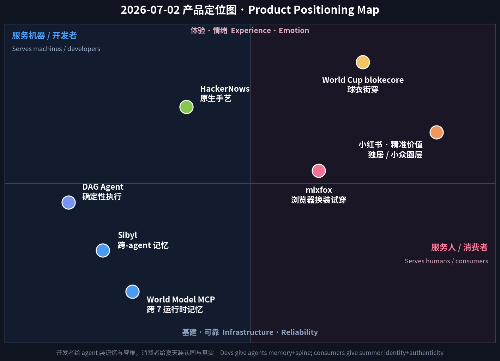

数据来源 / Sources: Hacker News（Show HN 7/1 榜：Sibyl、World Model MCP、Google OKF agent memory、Agentic OS、petabyte agent-sandbox 存储、DAG coding agent、mixfox 浏览器换装、HackerNows）、a16z《Big Ideas 2026》（death of the prompt / 多智能体「数字团队」）、Sensor Tower《State of AI 2026》、agent-memory 市场报告（mem0 / vectorize / atlan）、Trendalytics + WWD + TheStreet（World Cup 2026 blokecore 零售）、Forbes/Glance（虚拟试穿）、小红书 2026 八大趋势（知乎 / TopMarketing）、Amazon Movers & Shakers。 方法 / Method: WebSearch + web_fetch 抓取公开数据。Sensor Tower / X / LinkedIn / 小红书 / Product Hunt 多为登录或客户端渲染，采用公开检索摘要与新闻/新闻稿替代。为保证每日新意，已排除 6/12–7/01 已深度分析过的产品（BrowserAct、Skybridge、AgentX、Propane、Upstream、Framer 3.0、Wispr Flow、Fundraisly、Slashy、Vokal、Goldfish、Minimi、观鸟/鸟门 等）。 免责声明 / Disclaimer: 本报告为趋势研究，非投资建议。融资/估值/排名/下载与收入为第三方公开披露或估算，可能随时变化。
一句话 / In one line： 7 月 1 日的主线是「agent 不再借用人类工具，开始拥有自己的基建（浏览器 + 运行时 + 评测）」；今天的主线是「agent 长出了记忆——和一根脊椎」。 同一天，Hacker News 上冒出一整簇彼此独立的「agent 记忆 / agent 运行时」发布（Sibyl 跨 agent 记忆、World Model MCP 跨 7 个编码 agent 的记忆、Google OKF 的记忆校验框架、Agentic OS、给 agent 沙箱的 PB 级存储、Multi-User Agent Workspace），再加上一个「把意图编译成可验证 DAG 再执行」的确定性 agent。昨天缺的两块——持久性与可靠性——今天一次到齐。
Where July 1 was "agents stop borrowing human tools and start owning their stack — browser, runtime, eval," today's throughline is "agents grow a memory — and a spine." In a single day, Hacker News surfaced a whole cluster of independent agent-memory / agent-runtime launches — Sibyl (cross-agent memory), World Model MCP (memory across 7 coding agents), Google's OKF memory-verification framework, Agentic OS, petabyte storage for agent sandboxes, a Multi-User Agent Workspace — plus a determinism play that compiles intent into a verifiable DAG before running. The two pieces missing from yesterday's "own your stack" story — persistence and reliability — all showed up at once.
这不是巧合，而是需求到了临界点。每个编码 agent 都有同一个病：会话一结束，什么都忘了。 官方解法是一个平铺文件（CLAUDE.md / .cursorrules / AGENTS.md），约 200 行封顶、一个 sprint 就过时，而且在 Claude Code、Cursor、Codex 之间互不共享——每个 agent 每次都从零重建上下文。真正的成本不是「缺信息」，而是跨 10、20、50 次会话反复重学。于是市场给出定价：agent 记忆赛道 2026 年约 $62.7 亿 → 2030 年约 $284.5 亿（≈35% CAGR）；mem0 已拿 $24M A 轮、Letta $10M 种子。
It isn't a coincidence — it's demand hitting a threshold. Every coding agent has the same disease: it forgets everything when the session ends. The official fix is a flat file (CLAUDE.md / .cursorrules / AGENTS.md) that caps ~200 lines, goes stale within a sprint, and isn't shared across Claude Code, Cursor, or Codex — each agent rebuilds context from scratch. The real cost isn't missing information; it's compounding re-learning across 10, 20, 50 sessions. The market has put a price on it: the agent-memory space is ~$6.27B in 2026 → ~$28.45B by 2030 (≈35% CAGR), with Mem0 ($24M Series A) and Letta ($10M seed) already funded.
a16z 给这簇发布做了理论背书。《Big Ideas 2026》的判断是：2026 是「输入框之死」——下一代 AI 应用零提示，观察你在做什么、主动替你行动；企业从「孤立工具」转向像「协调的数字团队」一样运作的多智能体系统。而一支「数字团队」若没有共享、持久的记忆底座，就只是一群互相失忆的临时工。记忆，是让 agent 从『会话』升级为『同事』的前提。
a16z underwrites the cluster. Big Ideas 2026 calls 2026 "the death of the prompt box" — next-wave apps do zero visible prompting, observing what you do and acting proactively — and says enterprises are shifting from isolated tools to multi-agent systems that behave like coordinated digital teams. A "digital team" without a shared, durable memory substrate is just a crew of amnesiac temps. Memory is what upgrades an agent from a "session" into a "colleague."
与此同时，消费世界正在经历自己的一种「记忆」——四年一遇的超级周期。2026 世界杯正在美/加/墨本土进行（约 6/11–7/19），把 blokecore（球衣街穿） 变成十亿美元级零售引擎：blokecore 球衣搜索 同比 +1,839%，世界杯相关商品预计带动约 $41 亿 收入，球衣市场 $83 亿。而浏览器原生虚拟试穿（HN 上的 mixfox「换脸 + 换装」+ Google/Zara 宏观）正悄悄重写「怎么买衣服」——试穿用户转化率约 10×、退货率降 25–48%、且无需下载 App。中国这边，小红书进入「精准价值」时代：把流量倾斜给素人、押注小众兴趣圈层与独居真实生活，用「精致 vlog」换「放飞真实」。
Meanwhile, the consumer world is living its own kind of "memory" — a once-every-four-years supercycle. The 2026 World Cup is being played on US/CA/MX soil right now (~Jun 11–Jul 19), turning blokecore (jersey-as-streetwear) into a billion-dollar retail engine: blokecore jersey searches +1,839% YoY, ~$4.1B in related merch revenue, an $8.3B jersey market. And browser-native virtual try-on (mixfox's "face-swap + outfit try-on" on HN, plus the Google/Zara macro) is quietly rewiring how people buy clothes — ~10× conversion, 25–48% fewer returns, no app to install. In China, Xiaohongshu leaned into "precise value" — tilting reach to nano-creators and betting on niche interest circles and unfiltered solo-living over polished vlogs.

五条最强信号 / Five strongest signals
Sibyl（Show HN，作者 hyperb1iss）直击当日最痛的点：你的 agent 舰队各自失忆。 你用 Claude Code 重构、用 Cursor 补全、用 Codex CLI 跑 shell——三个 agent 学到的东西互不相通，每次都从零开始。Sibyl 的方案是一个自托管的记忆服务：所有 agent 通过 MCP（或 hooks / REST）读写同一份持久记忆；检索不是「grep 一个 markdown」，而是真正的检索管线（向量 + 关键词 + 知识图谱融合）。关键词是 self-hosted——把「你的代码库知识」这类最敏感的资产留在你自己的机器/VPC 里，而不是交给第三方云。它踩中的正是 a16z 说的「多智能体数字团队」的地基：没有共享记忆，团队就不存在。
Sibyl (Show HN, by hyperb1iss) hits the day's sharpest pain: your agent fleet is collectively amnesiac. You refactor in Claude Code, autocomplete in Cursor, run shell tasks in Codex CLI — and none of them share what they learned; every session starts at zero. Sibyl's answer is a self-hosted memory service: every agent reads/writes one persistent store via MCP (or hooks/REST), and retrieval is a real pipeline (vectors + keyword + knowledge graph) rather than grepping a markdown file. The keyword is self-hosted — keep your most sensitive asset (codebase knowledge) on your own machine/VPC instead of a third-party cloud. It sits exactly on a16z's foundation for "multi-agent digital teams": without shared memory, there is no team.
| 维度 Dimension | 分析 Analysis |
|---|---|
| 商业模式 Business model | 开源 / 自托管为主，未来大概率「开源核心 + 托管云 / 企业版（治理、审计、SSO）」变现。Open-source/self-hosted core; likely OSS-core + managed/enterprise later. |
| 核心功能 Core value | 跨 agent 的共享持久记忆：一处写入，Claude Code / Cursor / Codex 都能召回；向量+关键词+知识图谱检索。One shared memory across your whole agent fleet. |
| 成功因素 Success factors | 直击「跨会话反复重学」；self-hosted 打消数据外流顾虑；踩在 $62.7B 赛道上。Kills re-learning; data stays home; rides a $6.27B market. |
| 细分市场 Niche | 编码 agent 的记忆/上下文层（个人开发者 + 小团队起步）。Memory layer for coding agents. |
| 目标受众 Audience | 多 agent 并用的开发者、注重代码隐私的团队。Devs juggling multiple agents; privacy-conscious teams. |
| 品牌设计 Brand | 名字取自「女先知 Sibyl」——预言/记忆意象，气质与「记忆」定位契合。Oracle name = memory/foresight. |
| 产品数据 Data | HN Show HN（7/1）；赛道 $6.27B(2026)→$28.45B(2030)，35% CAGR。HN launch 7/1; market 35% CAGR. |
| 链接 Link | news.ycombinator.com/item?id=48741558 |
| 评论摘要 Reviews | 认同「flat-file 记忆撑不过一个 sprint」；讨论焦点：与 mem0/Letta/Zep 的差异、知识图谱是否过重、self-host 的运维成本。Debate: vs mem0/Letta; is the KG overkill; self-host ops cost. |
如果说 Sibyl 是「自托管派」，World Model MCP（Show HN，作者 saravanan2294）把同一场战争打向「跨运行时」维度：它宣称一份记忆横跨 7 个编码 agent 运行时。这正是 2026 记忆赛道的真正护城河所在——不是「哪个 agent 记性好」，而是「记忆能不能跟着你换 agent」。开发者不会只用一个 agent；当记忆变成可移植的公共层，agent 本身就被商品化，价值上移到「记忆 + 编排」。v0.10.0 的版本号也说明这仍是早期、快速迭代的开源项目——但方向感极强：把「世界模型 / 项目知识」做成一个所有 agent 都能挂载的 MCP 端点。
If Sibyl is the self-hosted camp, World Model MCP (Show HN, saravanan2294) fights the same war on the cross-runtime axis: it claims one memory spanning 7 coding-agent runtimes. That's where 2026's real moat lives — not "which agent remembers best," but "does memory follow you when you switch agents." Developers won't standardize on one agent; once memory becomes a portable, shared layer, the agent itself gets commoditized and value moves up to memory + orchestration. The v0.10.0 tag says it's early and iterating fast — but the direction is sharp: expose "world model / project knowledge" as an MCP endpoint any agent can mount.
| 维度 Dimension | 分析 Analysis |
|---|---|
| 商业模式 Business model | 开源 MCP server；变现路径类似（托管、团队同步、企业治理）。Open-source MCP server; hosted/team/enterprise upside. |
| 核心功能 Core value | 可移植记忆：横跨 7 个 agent 运行时的「世界模型」，换 agent 不丢上下文。Portable memory across 7 agent runtimes. |
| 成功因素 Success factors | 卡住「跨运行时」这个真护城河；MCP 标准化红利；开源快速迭代。Owns the portability moat; rides MCP standard. |
| 细分市场 Niche | 多 agent 团队的「记忆互操作」层。Memory-interop layer for multi-agent setups. |
| 目标受众 Audience | 同时用 Claude Code/Cursor/Codex 等多家 agent 的开发者与团队。Devs running several agents at once. |
| 品牌设计 Brand | 「World Model」直接借用 AI 前沿术语，暗示「不止记事实，还建模项目」。"World Model" borrows a frontier term = models the project, not just facts. |
| 产品数据 Data | HN Show HN（7/1）；v0.10.0；宣称跨 7 个 agent 运行时。HN 7/1; spans 7 runtimes. |
| 链接 Link | news.ycombinator.com/item?id=48743544 |
| 评论摘要 Reviews | 兴趣点在「跨运行时」；质疑在于 7 个 agent 的记忆 schema 如何统一、冲突如何解决。Interest in portability; questions on schema unification & conflict resolution. |
当天 HN Show HN 第 3 名（作者 arman-w-jalili）代表着「agent 长脊椎」的另一半：可靠性。它的做法反直觉但切中要害——不让 LLM 一边想一边动手，而是先把「意图」编译成一张确定性的 DAG（有向无环图），把整个执行计划摊开、可检查、可复现，再去跑。 这解决的是 agent 最大的信任赤字：同一个提示，两次跑出两种结果。把「计划」与「执行」解耦后，你能在动手前审计每一步、缓存中间结果、失败时精确重放。这与 a16z「设计给 agent、不是给人」的判断同频：当 agent 要在生产里干活，『可复现』比『更聪明』更值钱。
The day's #3 Show HN (by arman-w-jalili) is the other half of "agents grow a spine": reliability. Its move is counterintuitive but on-point — instead of letting the LLM think and act at the same time, it compiles "intent" into a deterministic DAG first, laying the whole execution plan out to be inspected and reproduced before anything runs. That attacks the agent's biggest trust deficit: same prompt, two different outcomes. Decoupling plan from execution lets you audit each step up front, cache intermediate results, and replay failures precisely. It rhymes with a16z's "design for agents, not humans": when an agent does real work in production, reproducible beats smarter.
| 维度 Dimension | 分析 Analysis |
|---|---|
| 商业模式 Business model | 早期；预计开发者工具方向（开源 + 云执行/团队协作变现）。Early; likely dev-tool (OSS + cloud execution). |
| 核心功能 Core value | 把意图编译成可验证 DAG 再执行：计划可审计、结果可复现、失败可重放。Compile intent → verifiable DAG → reproducible runs. |
| 成功因素 Success factors | 直击「非确定性」信任赤字；plan/exec 解耦；契合生产级 agent 需求。Kills nondeterminism; production-grade. |
| 细分市场 Niche | 可靠 agent 编排 / 生产级 agent 执行层。Reliable agent orchestration. |
| 目标受众 Audience | 要把 agent 放进 CI/生产流水线的工程团队。Teams putting agents into CI/production. |
| 品牌设计 Brand | 以「确定性 / DAG」为记忆点，气质偏工程严谨。Positioned on determinism — engineering-serious. |
| 产品数据 Data | HN Show HN 当日 #3，11 pts。#3 Show HN of the day, 11 pts. |
| 链接 Link | news.ycombinator.com/item?id=48741332 |
| 评论摘要 Reviews | 认可「先规划后执行」；讨论：LLM 生成的 DAG 本身是否确定、动态分支怎么处理。Praise for plan-then-run; debate on whether the LLM-built DAG is itself deterministic. |
mixfox（Show HN #8）把当日最强的消费级 AI信号具象化：打开浏览器就能实时换脸、换装试穿——无需下载 App、无需 3D 建模。 它单点切入的，是一场正在成为「必备」的宏观趋势：2026 年虚拟试穿（VTO）从「实验」变「刚需」。技术拐点是用生成式 AI 直接处理 2D 图片（不再需要 3D 资产）+ WebXR/浏览器 AR（去掉 App 下载门槛），把可触达人群一次放大。商业价值是硬的：试穿用户对同一商品页的转化率约为不试穿的 10×，退货率下降 25–48%（服饰/鞋类最受益，因为「尺码不确定」正是退货头号原因）。Google（联手 DressX）、Zara（1 月上线交互式试穿）已在把它主流化——mixfox 这类「浏览器原生、零门槛」的实现，正是这条曲线的平民化入口。
mixfox (Show HN #8) makes the day's strongest consumer-AI signal concrete: real-time face-swap and outfit try-on right in the browser — no app, no 3D modeling. Its wedge rides a macro trend that's becoming table stakes: in 2026, virtual try-on (VTO) went from experiment to essential. The inflection is generative AI on plain 2D images (no 3D assets) plus WebXR/browser AR (no app download), expanding the addressable audience at once. The business case is hard: try-on users convert ~10× vs non-try-on on the same PDP, and returns drop 25–48% (apparel/footwear benefit most, since sizing uncertainty is the #1 return driver). Google (with DressX) and Zara (interactive try-on shipped in January) are mainstreaming it — and browser-native, zero-friction builds like mixfox are the mass-market on-ramp.
| 维度 Dimension | 分析 Analysis |
|---|---|
| 商业模式 Business model | 预计 freemium / 按次 + 面向电商的 SDK/嵌入（PDP 试穿）。Freemium/usage + embeddable SDK for storefronts. |
| 核心功能 Core value | 浏览器内实时换脸 + 换装，无 App、无 3D 建模。In-browser real-time face-swap + outfit try-on. |
| 成功因素 Success factors | 踩中 VTO「必备化」曲线；WebXR 去 App 门槛；转化 10×、退货降 25–48% 的硬 ROI。Rides VTO wave; hard conversion/returns ROI. |
| 细分市场 Niche | 浏览器原生虚拟试穿 / 时尚电商增效。Browser-native VTO for fashion e-com. |
| 目标受众 Audience | DTC/时尚品牌、Shopify 卖家、爱试装的消费者。DTC & fashion brands, Shopify sellers, shoppers. |
| 品牌设计 Brand | 名字轻快（mix+fox），弱化「工具感」、强调「好玩即用」。Playful name = fun-first, low-friction. |
| 产品数据 Data | HN Show HN #8；宏观：试穿转化 ~10×、退货 −25~48%、Zara 1 月上线。HN #8; VTO ~10× conv, −25–48% returns. |
| 链接 Link | news.ycombinator.com/item?id=48740942 |
| 评论摘要 Reviews | 赞「浏览器里就能跑、很惊艳」；隐忧在换脸的同意/深伪滥用与真实布料物理的还原度。Wow at browser speed; concerns on deepfake consent & cloth realism. |
在满屏 agent 与 AI 之间，当日 Show HN 第一名却是一个极其「反 AI 叙事」的东西：HackerNows——一个原生 iOS 的 Hacker News 客户端（22 分、49 评论，作者 maguszin）。它不解决什么万亿美元问题，它解决的是「一个我每天用、但没人好好做过的东西」。这恰恰是 HN 社区的口味试纸：当所有人都在造 agent 时，「手艺、克制、原生体验」本身成了差异化。它提醒产品人一件容易忘的事——分发面在变（聊天框、agent），但『把一件小事做到极致』的老派价值从未过时；而且 49 条评论 > 22 分，说明它更激发了「讨论/共鸣」，是典型的「社区最爱」型产品。
Amid a feed full of agents and AI, the day's #1 Show HN is something deliberately anti-AI-narrative: HackerNows — a native iOS Hacker News client (22 points, 49 comments, by maguszin). It solves no trillion-dollar problem; it solves "a thing I use every day that nobody built well." That's a litmus test for HN taste: when everyone is shipping agents, craft, restraint, and a native feel become the differentiation. It's a useful reminder for product people — the distribution surface is shifting (chatboxes, agents), but the old-school value of doing one small thing exceptionally well never expired. And with more comments than points (49 > 22), it's a classic "community-beloved" launch that sparks discussion more than upvotes.
| 维度 Dimension | 分析 Analysis |
|---|---|
| 商业模式 Business model | 典型独立 App：免费 + 一次性解锁/订阅去广告/高级特性。Indie app: free + one-time/sub unlock. |
| 核心功能 Core value | 原生、快、克制的 HN 阅读体验（手势、离线、排版）。Native, fast, restrained HN reading. |
| 成功因素 Success factors | 「手艺感」在 AI 洪流中反成差异化；命中 HN 核心人群自用刚需。Craft as counter-signal; self-serving core audience. |
| 细分市场 Niche | 高信息密度社区的原生客户端。Native client for a high-signal community. |
| 目标受众 Audience | 重度 HN 用户、开发者、极客。Heavy HN users, devs, geeks. |
| 品牌设计 Brand | 名字直白俏皮（HackerNews→HackerNows），暗示「此刻/更快」。Playful "News→Nows" = now/faster. |
| 产品数据 Data | 当日 Show HN #1：22 分 / 49 评论（评论>分数=高共鸣）。#1 Show HN: 22 pts / 49 comments. |
| 链接 Link | news.ycombinator.com/item?id=48744778 |
| 评论摘要 Reviews | 关注原生手感、与既有 HN 客户端之别、是否上安卓/开源。Native feel, vs existing clients, Android/OSS asks. |
不是一个 App，而是当日最大的实体消费信号：2026 世界杯正在美/加/墨本土进行（约 6/11–7/19），把足球从「赛事」变成「文化时刻」，并点燃一场十亿美元级零售引擎。核心审美是 blokecore——把复古/球队球衣当日常街穿，向下延伸到运动墨镜、过膝袜、机车夹克、丹宁百慕大短裤、低帮球鞋。数据很猛：blokecore 球衣搜索 同比 +1,839%（Trendalytics），开赛 5 周内足球球衣搜索 +652%；全球球衣市场 $83 亿、世界杯相关商品预计带动约 $41 亿 收入；Depop 球衣销量开赛周 周环比 +26%、复古球衣转售在大赛期间 +294%。零售端全面接招：Amazon「Summer of Soccer」、Macy's「World Soccer HQ」（500+ SKU）、JCPenney×Fanatics；联名有 Jacquemus×Nike（法国）、Nike×Palace、Levi's FA、adidas 复刻队服。对卖家的意义：这是一个有确定档期、确定情绪、可提前铺货的『可预测爆款』窗口。
Not an app — the day's biggest physical-consumer signal. The 2026 World Cup is being played on US/CA/MX soil right now (~Jun 11–Jul 19), turning football from an event into a cultural moment and igniting a billion-dollar retail engine. The core aesthetic is blokecore — retro/team jerseys worn as everyday streetwear — extending into sporty sunglasses, knee-high socks, track jackets, denim Bermudas, low-profile sneakers. The data is loud: blokecore jersey searches +1,839% YoY (Trendalytics), football-jersey searches +652% in five weeks around the opener; a $8.3B global jersey market and ~$4.1B in related merch revenue; Depop jersey sales +26% WoW in opening weeks and vintage resale +294% during major tournaments. Retail leaned in hard: Amazon "Summer of Soccer," Macy's "World Soccer HQ" (500+ SKUs), JCPenney × Fanatics; collabs from Jacquemus × Nike (France), Nike × Palace, Levi's FA, adidas. For sellers: a rare predictable blockbuster window — fixed dates, fixed emotion, stock it in advance.
| 维度 Dimension | 分析 Analysis |
|---|---|
| 商业模式 Business model | 官方商品 + 品牌联名 + 二手转售（Depop）+ 平台专题店。Official merch + collabs + resale + retailer hubs. |
| 核心功能 Core value | 把「球队认同」变成可日常穿的文化符号（blokecore）。Team identity → wearable cultural symbol. |
| 成功因素 Success factors | 四年一遇、确定档期、情绪极强、可提前铺货；街穿化打破「只在看球时穿」。Fixed-date, high-emotion, pre-stockable. |
| 细分市场 Niche | 运动×街头×复古的交叉带（含配件长尾）。Sport × streetwear × retro, plus accessories. |
| 目标受众 Audience | 球迷、Z 世代街头潮流、二手/复古玩家。Fans, Gen-Z streetwear, resale/vintage buyers. |
| 品牌设计 Brand | 「blokecore / soccercore」美学：复古配色、做旧、拼接。Retro palettes, distressing, remixing. |
| 产品数据 Data | 球衣搜索 +1,839% / +652%；$83亿市场；$41亿商品收入；Depop +26% WoW。+1,839%/+652%; $8.3B; $4.1B. |
| 链接 Link | blog.trendalytics.co/world-cup-2026-fashion-trends-retail-data · store.fifa.com/collections/world-cup-2026 |
| 评论摘要 Reviews | 消费者称「球衣现在天天能穿」；行业担心盗版泛滥与赛后需求回落。"Jerseys are now everyday"; worry on counterfeits & post-event drop-off. |
中国消费侧当日主线：小红书 2026 的风向从「泛流量、精致 vlog」转向「精准价值、真实生活」。 平台把 50%+ 流量倾斜给千粉以下素人，扶持 3000+ 兴趣圈层——越细分越吃香。两条最热赛道：独居（近 90 天浏览 >2 亿，内容从「精致」转向「放飞真实」）与减脂/养生美食、文玩等专业化垂类。平台方法论也被明确写出：最好的『种草』是真实体验，用「问题→解决方案→产品」的叙事，而不是产品堆砌。 对品牌与创作者的含义很直接——别再追大词大流量；找到一个足够细、你能提供真实价值的圈层，把「有用 + 真实」做到位，转化自然来。（注：观鸟/鸟门虽仍热，因前期报告已深度覆盖，此处不重复。）
The day's China thread: Xiaohongshu's 2026 wind shifted from "broad traffic + polished vlogs" to "precise value + real life." The platform tilts 50%+ of reach to sub-1k-follower creators, backing 3,000+ interest circles — the more niche, the better. Two hottest lanes: solo living (90-day views >200M, tone moving from "curated" to "unfiltered") and specialized verticals like fat-loss/wellness food and collectibles (文玩). The platform's own playbook is explicit: the best "种草" (product seeding) is a real experience told as problem → solution → product, not a stack of products. The takeaway for brands/creators is direct — stop chasing big keywords and broad reach; find a niche narrow enough that you can deliver real value, nail "useful + authentic," and conversion follows. (Note: birding/观鸟 is still hot but was deeply covered earlier — not repeated here.)
| 维度 Dimension | 分析 Analysis |
|---|---|
| 商业模式 Business model | 内容种草 → 电商/私域转化；素人扶持降低投放门槛。Content seeding → commerce; nano-creator leverage. |
| 核心功能 Core value | 精准细分 + 真实体验的高转化种草生态。High-converting niche + authentic seeding. |
| 成功因素 Success factors | 流量倾斜素人、细分圈层红利、真实叙事更可信。Nano-creator reach, niche dividend, trust. |
| 细分市场 Niche | 独居经济、减脂养生、文玩等专业垂类。Solo-living, wellness food, collectibles. |
| 目标受众 Audience | Z 世代/都市独居者、垂类兴趣人群、中小品牌。Gen-Z/urban solos, niche hobbyists, SMB brands. |
| 品牌设计 Brand | 审美从「精致 vlog」转向「真实、去滤镜、生活感」。From polished vlog to real, de-filtered. |
| 产品数据 Data | 独居 90 天浏览 >2 亿；3000+ 兴趣圈；>50% 流量给素人。Solo >200M views; 3,000+ circles; >50% reach to nano. |
| 链接 Link | zhuanlan.zhihu.com/p/1991105890716247188 · xiaohongshu.com/explore |
| 评论摘要 Reviews | 创作者称素人更容易起量；争议：精准 vs 规模、变现天花板。Nano-creators find it easier to break out; debate on scale vs precision. |
| 产品/趋势 Product | 类别 Category | 商业模式 Model | 目标用户 Audience | 关键数据 Key data | 细分市场 Niche |
|---|---|---|---|---|---|
| Sibyl | Agent 记忆 Agent memory | OSS/self-host → 企业版 | 多 agent 开发者/隐私团队 | 赛道 35% CAGR，$6.27B→$28.45B | 编码 agent 记忆层 |
| World Model MCP | Agent 记忆 Agent memory | OSS MCP → 托管 | 跨 agent 团队 | 跨 7 个 agent 运行时；v0.10.0 | 记忆互操作层 |
| DAG coding agent | Agent 可靠性 Reliability | OSS + 云执行 | CI/生产工程团队 | HN Show HN #3（11 pts） | 确定性 agent 编排 |
| mixfox | 消费 AI / 试穿 VTO | Freemium + SDK | DTC/时尚品牌、消费者 | 试穿转化 ~10×，退货 −25~48% | 浏览器原生虚拟试穿 |
| HackerNows | 独立 App Indie | 免费 + 解锁 | 重度 HN 用户/极客 | Show HN #1：22 pts/49 评论 | 高信号社区客户端 |
| World Cup blokecore | 实体消费 Retail | 官方+联名+转售 | 球迷/Z 世代/复古玩家 | 球衣搜索 +1,839%；merch $4.1B | 运动×街头×复古 |
| 小红书精准价值 | 中国消费 China | 种草→电商/私域 | 都市独居/垂类人群 | 独居 >2亿 浏览；3000+ 圈层 | 独居/养生/文玩 |
1. 「记忆」是 2026 agent 的下一个战场，而护城河在『跨』字上。/ Memory is 2026's next agent battleground — and the moat is the word "cross." 昨天 agent 得到了浏览器/运行时/评测，今天得到了持久记忆。但真正决定胜负的不是「哪个 agent 记性好」，而是记忆能否跨会话、跨 agent、跨运行时（Sibyl 主打跨 agent、World Model MCP 主打跨 7 个运行时）。当记忆变成可移植公共层，agent 被商品化，价值上移到「记忆 + 编排」。
Yesterday agents got a browser/runtime/eval; today they got persistent memory. The winner won't be "the agent that remembers best" but memory that is cross-session, cross-agent, cross-runtime. As memory becomes a portable shared layer, the agent commoditizes and value moves up to memory + orchestration.
2. 可靠性正与智能并列成为卖点。/ Reliability is becoming a feature on par with intelligence. DAG agent 把「先编译成可验证图再执行」做成产品，回应的是 agent 最大的信任赤字——非确定性。当 agent 要进生产，「可复现」比「更聪明」更能成交。这是「agent 长脊椎」的一年。
The DAG agent productizes plan-then-run to attack nondeterminism. For production agents, reproducible closes deals better than smarter. This is the year agents grow a spine.
3. 「无摩擦分发」是消费 AI 的隐形冠军。/ Zero-friction distribution is consumer AI's hidden champion. mixfox 的杀手锏不是「能换装」，而是「在浏览器里、不用下载 App」。WebXR 去掉安装门槛→可触达人群暴涨→10× 转化。把强能力塞进用户已经打开的那个页面，永远赢过让他们再装一个 App。
mixfox's edge isn't "try-on" — it's "in the browser, no app." WebXR removes the install wall → audience explodes → 10× conversion. Putting power inside the page users already have open beats making them install another app.
4. 可预测的『情绪档期』是实体电商最稳的爆款。/ Predictable "emotional calendars" are physical retail's safest blockbusters. 世界杯把「四年一遇 + 确定档期 + 极强情绪」三者叠加，blokecore 让球衣从「看球才穿」变「天天能穿」，把峰值需求拉成一条更长的曲线。卖家的功课不是猜爆款，而是围绕确定的情绪日历提前铺货。
The World Cup stacks once-in-4-years + fixed dates + high emotion; blokecore stretches peak demand into a longer curve by making jerseys everyday-wearable. The seller's job isn't guessing hits — it's pre-stocking around a known emotional calendar.
5. 东西方消费在朝相反方向找「真实」。/ East and West are chasing "authenticity" from opposite ends. 西方靠一场全民赛事制造集体身份（blokecore、球衣街穿）；中国的小红书靠去中心化的小众圈层与去滤镜的独居生活制造个体真实。共同点是：「精致完美」正在贬值，「真实可感」正在升值——无论是穿旧球衣，还是晒真实独居。
The West manufactures collective identity through a mass event (blokecore); China's Xiaohongshu manufactures individual authenticity through decentralized niche circles and de-filtered solo living. The shared truth: polished perfection is depreciating; felt authenticity is appreciating — whether that's a worn jersey or an unfiltered studio apartment.
一句话收尾 / The one-liner: 今天，开发者在给 agent 装记忆和脊椎，消费者在给夏天装认同与真实——两条线索都指向同一个词：持续（persistence）。给 agent 的是跨会话的记忆，给人的是四年一遇却能天天穿的球衣，和一个「越真实越长久」的内容生态。
Today, developers are giving agents memory and a spine; consumers are giving summer identity and authenticity — and both point at one word: persistence. For agents, memory that survives the session; for people, a once-in-four-years jersey you can wear every day, and a content ecosystem where the more real it is, the longer it lasts.
报告生成 / Generated: 2026-07-02 · 自动化每日趋势任务 Automated daily trend task · 非投资建议 Not investment advice.